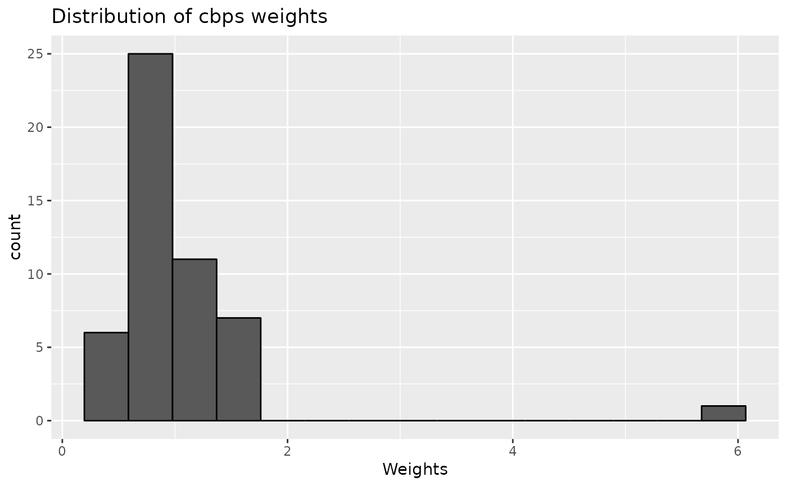
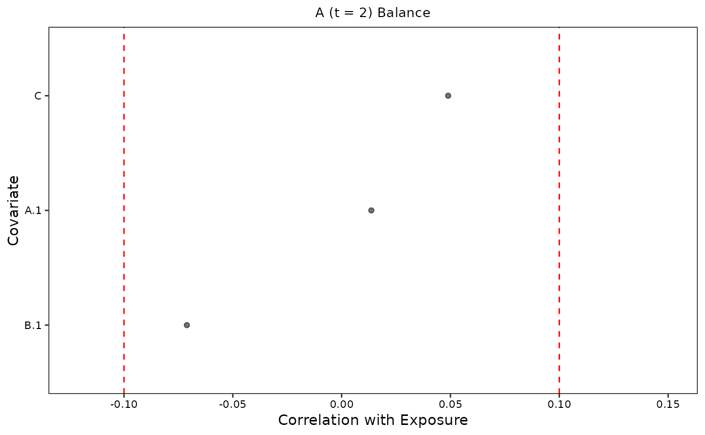
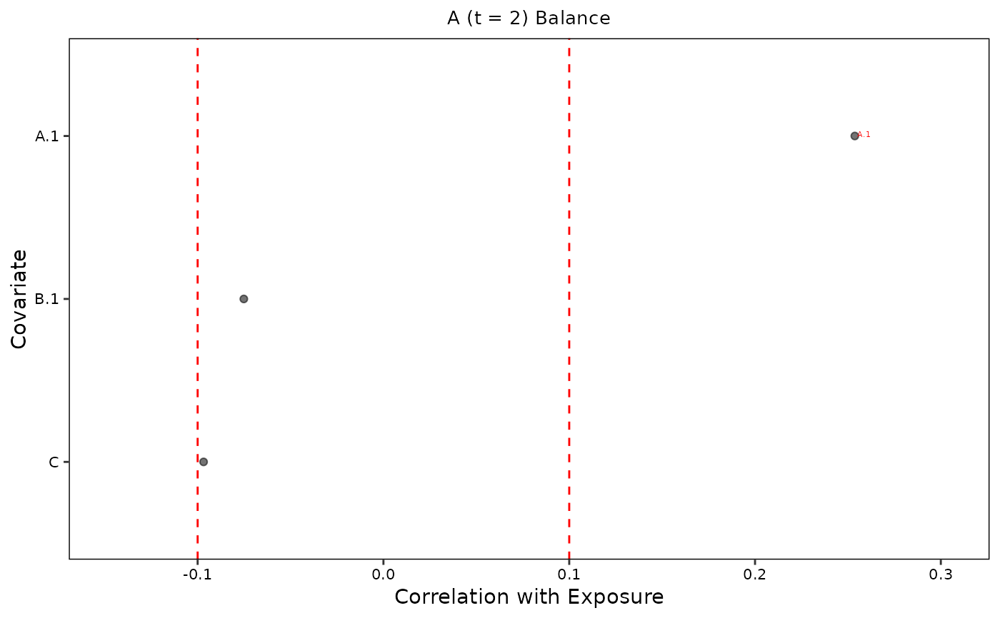
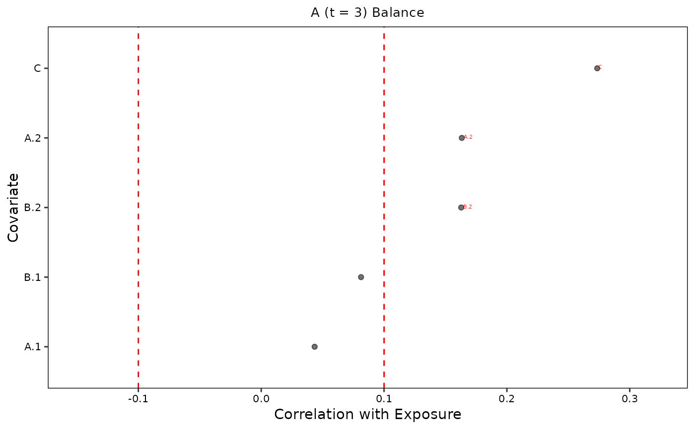
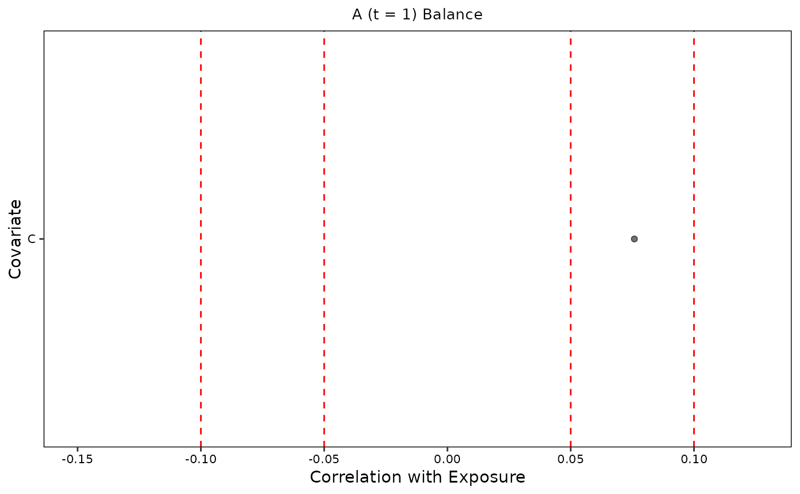
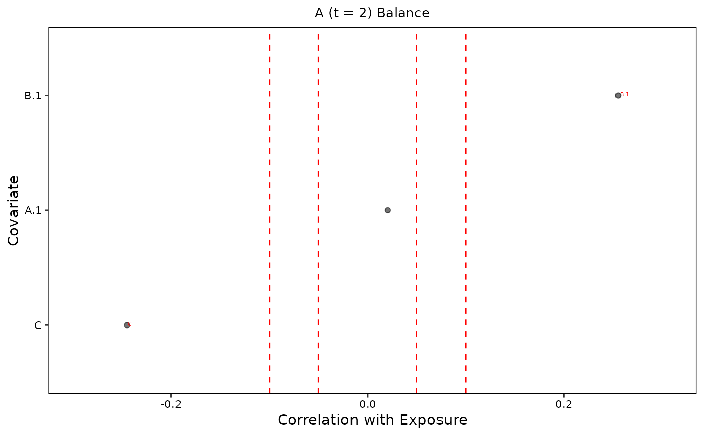

calcBalStats.RdCalculate weighted or unweighted standardized balance statistics for a given exposure time point, using all relevant confounders. Draws on Jackson, 2016 approaches to assessing balance for time-varying exposures by weighting statistics based on sample distribution in exposure histories.
calcBalStats(
home_dir = NA,
data,
formulas,
exposure,
exposure_time_pts,
outcome,
balance_thresh,
k = 0,
weights = NULL,
imp_conf = NULL,
verbose = TRUE,
save.out = TRUE
)(optional) path to home directory (required if save.out = TRUE)
data in wide format as: a data frame, path to folder of imputed .csv files, or mids object
list of balancing formulas at each time point output from createFormulas()
name of exposure variable
list of integers at which weights will be created/assessed that correspond to time points when exposure wass measured
name of outcome variable with ".timepoint" suffix
(optional) one or two numbers between 0 and 1 indicating a single balancingn threshold or thresholds for more and less important confounders, respectively
(optional) imputation number
(optional) list of IPTW weights output from createWeights
(optional) list of variable names reflecting important confounders (required if two balance thresholds are provided)
(optional) TRUE or FALSE indicator for user output (default is TRUE)
(optional) TRUE or FALSE indicator to save output and intermediary output locally
data frame of balance statistics
test <- data.frame(ID = 1:50,
A.1 = rnorm(n = 50),
A.2 = rnorm(n = 50),
A.3 = rnorm(n = 50),
B.1 = rnorm(n = 50),
B.2 = rnorm(n = 50),
B.3 = rnorm(n = 50),
C = rnorm(n = 50),
D.3 = rnorm(n = 50))
test[, c("A.1", "A.2", "A.3")] <- lapply(test[, c("A.1", "A.2", "A.3")], as.numeric)
f <- createFormulas(exposure = "A",
exposure_time_pts = c(1, 2, 3),
outcome = "D.3",
tv_confounders = c("A.1", "A.2", "A.3", "B.1", "B.2", "B.3"),
ti_confounders = "C",
type = "full",
save.out = FALSE)
#> USER ALERT: Please manually inspect the full balancing formula below:
#> The full formula for A - D.3 at A time point 1 is:
#> A.1 ~ C
#> <environment: 0x5567f2eb55e8>
#>
#> USER ALERT: Please manually inspect the full balancing formula below:
#> The full formula for A - D.3 at A time point 2 is:
#> A.2 ~ A.1 + B.1 + C
#> <environment: 0x5567f2eb55e8>
#>
#> USER ALERT: Please manually inspect the full balancing formula below:
#> The full formula for A - D.3 at A time point 3 is:
#> A.3 ~ A.1 + A.2 + B.1 + B.2 + C
#> <environment: 0x5567f2eb55e8>
#>
w <- createWeights(data = test,
exposure = "A",
outcome = "D.3",
formulas = f,
save.out = FALSE)
#> Error in weightit2cbps.cont(covs = covs, treat = treat, subset = by.factor == i, s.weights = s.weights, missing = missing, verbose = verbose, ...): The package "CBPS" is required.
c <- calcBalStats(data = test,
formulas = f,
exposure = "A",
exposure_time_pts = c(1, 2, 3),
outcome = "D.3",
balance_thresh = 0.1)



#> For each time point, prebalance summary plots for full
#> formulas weighting method no weights have now been saved in the prebalance/ plots/' folder.
#>
#>
#> Balance statistics using full formulas for A using
#> no weights have been saved in the 'balance/prebalance/' folder.
#>
#> Sampling weights using the full for A have been saved in the 'balance/prebalance/' folder.,
#>
#> As shown below, 4 out of 9 ( 44%) covariates across time points, corresponding to 2 out of 3 domains,
#> remain imbalanced with a remaining median absolute value correlation/std mean difference of 0.15 (range= -0.34-0.15):
#>
#> Table: Imbalanced covariates using no weights and full formulas
#>
#> | exp_time| balanced_n| imbalanced_n| n|
#> |--------:|----------:|------------:|--:|
#> | 1| 1| 0| 1|
#> | 2| 1| 2| 3|
#> | 3| 3| 2| 5|
#>
#>
c <- calcBalStats(data = test,
formulas = f,
exposure = "A",
exposure_time_pts = c(1, 2, 3),
outcome = "D.3",
balance_thresh = c(0.05, 0.1),
imp_conf = "B2")



#> For each time point, prebalance summary plots for full
#> formulas weighting method no weights have now been saved in the prebalance/ plots/' folder.
#>
#>
#> Balance statistics using full formulas for A using
#> no weights have been saved in the 'balance/prebalance/' folder.
#>
#> Sampling weights using the full for A have been saved in the 'balance/prebalance/' folder.,
#>
#> As shown below, 4 out of 9 ( 44%) covariates across time points, corresponding to 2 out of 3 domains,
#> remain imbalanced with a remaining median absolute value correlation/std mean difference of 0.15 (range= -0.34-0.15):
#>
#> Table: Imbalanced covariates using no weights and full formulas
#>
#> | exp_time| balanced_n| imbalanced_n| n|
#> |--------:|----------:|------------:|--:|
#> | 1| 1| 0| 1|
#> | 2| 1| 2| 3|
#> | 3| 3| 2| 5|
#>
#>
c <- calcBalStats(data = test,
formulas = f,
exposure = "A",
exposure_time_pts = c(1, 2, 3),
outcome = "D.3",
balance_thresh = 0.1,
weights = w[[1]])
#> Error in eval(expr, envir, enclos): object 'w' not found